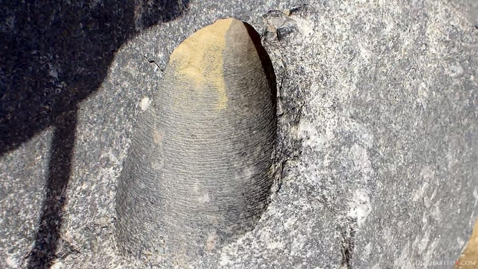
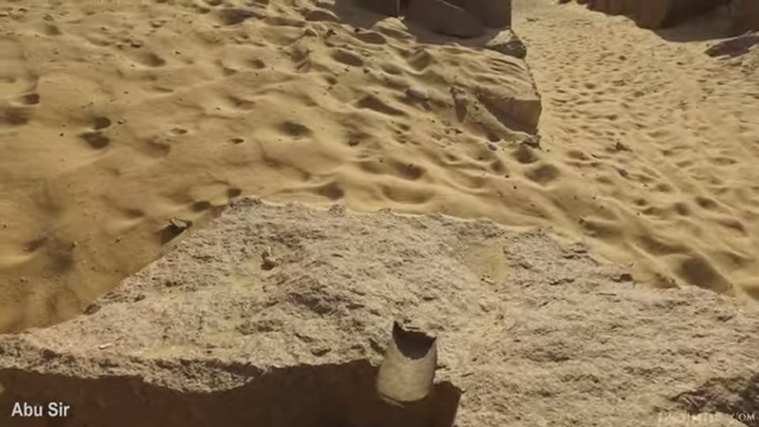
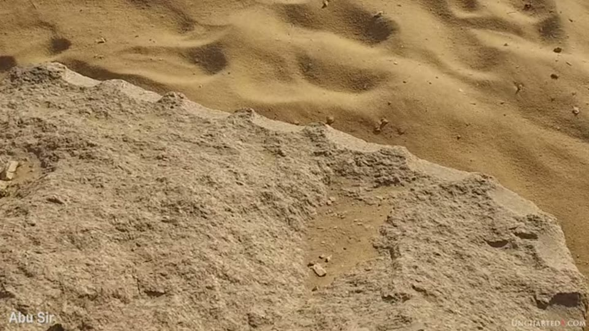
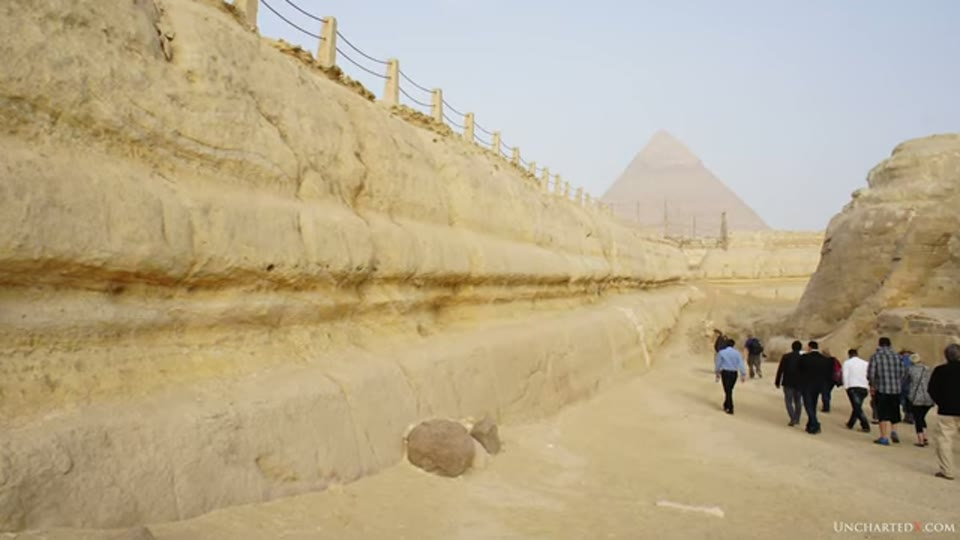
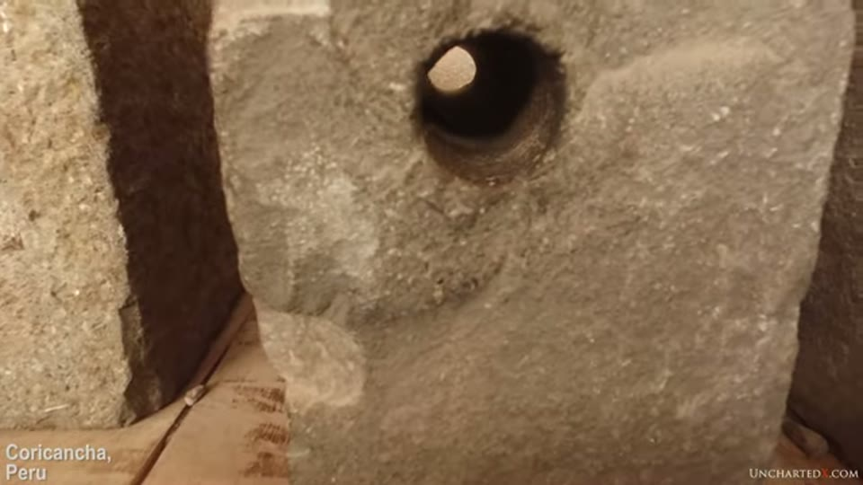
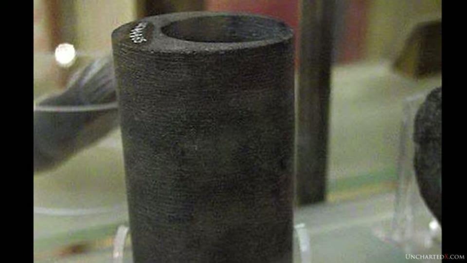

UnchartedX
Ancient Tube Drills, Part 2! More context, more Petrie, more cores, even some examples from Peru!
Ben · 25 min · watch on YouTube · summarised 2026-09-30
A 25-minute follow-up to the hour-long documentary held as the tube drills entry, made because that video had drawn close to a thousand comments 00:31–01:14. Ben recommends watching the first one before this one. It shares no narration with it at all.
The recap is short 01:16–04:19. Tube drill holes in granite, basalt and diorite across dynastic Egypt, mostly on Old Kingdom sites; a hundred and fifty years of argument about how they were made, beginning with Flinders Petrie in the late 1800s; abrasive drilling with a copper or bronze tube and sand, which works and is not in dispute; and the one thing that is — the continuous spiral groove Petrie reported on his core number 7, and the feed rate it implies, which Ben puts at roughly 500 times what modern diamond drilling achieves. He is careful about what that figure is: "that's not to say that the drill spins as fast or faster — we're talking about the actual feed rate. It may have been turning very slowly, and all we have to go on here are the marks."
The concession, and it is a substantial one
The first thing the addendum does is shrink the claim. Ben says he wrote this for the documentary and cut it, and "probably should have left it in there" 04:19–05:44:
"I'm not talking about every single drill hole or drill core across ancient Egypt… Petrie himself only named a handful of specific examples… I do think that the dynastic Egyptians certainly made use of the copper or bronze tube used with sand or other abrasive slurries. As Petrie himself said, many civilizations including our own developed this technique for working stone. There are plenty of smooth-bore holes that can be found in ancient architecture, and even some with what are clearly circular striations and marks that are very likely the result of this process."
What he keeps is narrower: a specific subset, distinguished by deep and apparently spiral grooves, which he thinks covers most Old Kingdom examples in very hard stone and which he says are among the oldest tube-drilled objects anywhere.

The object the whole dispute is about: a tube-drilled core left standing in its hole in hard stone.
Why so few cores survive
A mechanism offered for the thinness of the evidence 06:36–08:03. These sites were worked as quarries for thousands of years because of the quality of the stone, so what is left is a mixture from several periods. A block at the entrance to Abusir carries a drill core split down the middle on one face, and on the other face the wedge-hole marks of low-technology quarrying — divots cut into the stone, wood driven in and wetted so that it swells and splits the block.
His argument is that a block containing a drill hole is a better candidate for quarrying than a solid one, because there is less material to resist the crack and the break can be predicted to run along the axis of the hole. So the cores, on this account, were sought out and destroyed.


That the blocks carrying drill cores were later worked as quarry stone.
The ultrasonic proposal, withdrawn by the man who made it
The question Ben says came up repeatedly in the comments is whether Chris Dunn's ultrasonic proposal explains the striations 08:03–10:40. His answer is that it does not, and that Dunn reached that conclusion first.
The proposal dates from a magazine article in the 1980s, before Dunn had examined the core: a tool oscillating very rapidly, exploiting the resonant behaviour of quartz, to explain the penetration rate. Dunn then examined core 7 himself in the late 1990s and again in the early 2000s, looked at how the material had been removed between the mica and the crystals at microscopic level, and published this:
"As seen in the close-up photographs of the latex impression, the irregularities in the groove cannot be overlooked and seem to argue against the theory that a tool with a precise mechanism for advancement was used. These inaccuracies, along with random movement of material removed from the hole during the process, though, support a strong argument that either a manual or an inaccurate, mechanically controlled tool played some part in performing the work. Upon closer inspection I find no evidence to support the theory that ultrasonic drilling was employed. In fact there is an abundance of evidence, when we look closely at the surface of the latex, to argue against this theory."
The passage is shown as a scan of the printed page, beside the cover of Lost Technologies of Ancient Egypt: Advanced Engineering in the Temples of the Pharaohs and a photograph of Dunn, so the quotation can be checked against its source. Ben's comment on it: "he essentially debunked himself… he did this by following the evidence to where it leads. It's basically how science should work — you're not looking for verification of what you want to see."

That the ultrasonic proposal was withdrawn in print by the man who made it.
Petrie's own answer, and why it is rejected too
This is the material that was missing from part one, where Petrie's jewelled-point proposal is set aside on historical grounds with no mechanical objection attached 10:40–12:22.
Petrie's explanation was a very finely made bronze tube with firmly set jewelled cutting points. He thought diamond most likely and could not support it, because there is no evidence of diamond in dynastic Egypt — Ben adds that the Egyptians favoured coloured stones and that a colourless one may have meant little to them.
Ben rejects it, and the objection he uses is Petrie's own:
"Petrie almost seems to debunk himself by trying to calculate the pressure that must have been exerted on the tube, and by wondering how such a tool didn't fold or bend in the process. I would agree with this concern. I can't see how anything that was made very rigidly and out of bronze, with fixed and presumably very hard cutting points… could possibly stand up to the granite under those sort of pressures. In my mind the bronze would bend, or the tool would basically be warped out of shape, before it would actually cut the granite."
His account of why Petrie landed there is about the state of knowledge in the 1880s rather than about Petrie 12:22–13:16: humanity was thought to be perhaps fifty thousand years old, there was no DNA, no radiocarbon dating, nothing known of the Younger Dryas, and science was actively distancing itself from the catastrophism of religion. "Petrie stuck to his guns though, and he explained the evidence as best he could."
The argument about recognition
The section Ben says he most wanted to make 13:16–16:20. The claim is that it took the Industrial Revolution before anyone had the background to understand what a spiral groove in granite would mean — "we had people that understood what it meant to put a spiral groove into granite like that; we had processes that we could compare to it."
His illustration is a dead mobile phone, which he holds up to camera. To a frog, or to someone from a thousand years ago, it is shiny, flat, black, plastic and useless. "You have no context to explain what this is." We cannot build one either, but we know what it is, because touchscreens and displays and wireless networking are already in our heads.
He states the strength of the inference himself, and qualifies it in the same breath: "I think this in itself is proof that this is work of a high technology nature — and it's not, I mean it's not direct proof, but it's definitely circumstantial evidence." What he draws from it is a preference about method: that instead of reaching for primitive explanations and calling every unexplained thing symbolic, or a temple, or a tomb, the explanation may sit outside current technological understanding.
Petrie as an engineer, and who gets to judge
16:20–22:05. Ben's reading of Petrie is that he was "much more of an engineer than an archaeologist", and the first to apply measurement and metrology to Egypt. From that he makes a complaint about the present: that archaeology and Egyptology have claimed sole authority over the past, and that they are not the right professions to judge engineering, construction or masonry — nor, he says, "whether the weathering on the limestone walls of the Sphinx enclosure is caused by wind and sand or by water", which he would put to professional geologists. That dispute is held as the erosion entry.

The example given of a question the presenter says belongs to geologists rather than Egyptologists.
Two passages from **Petrie's *The Pyramids and Temples of Gizeh*** are then read out, and both are shown on screen as scans of the printed pages, so they can be read rather than heard. The first is Petrie's own statement that his subject falls between disciplines:
"The ends and the means appeal to separate classes: the antiquarian, whose are the ends, will look askance at the means, involving co-ordinates, probable errors, and arguments based on purely mechanical considerations; the surveyor and geodetist, whose are the means, will scarcely care for their application to such remote times… while only those familiar with mechanical work will fully realise the questions of workmanship and tools here explained."
It ends on a standard for measurement: "Modern inquiry should never rest content with saying that anything was 'exact,' but always show what error in fact or in work was tolerated by the ancient worker, and was considered by him as his allowable error."
The second is Petrie on his predecessors — the French expedition, Colonel Howard Vyse, the Prussian expedition and Piazzi Smyth: "Though the French were active explorers, they were far from realising the accuracy of ancient work… Hence they rather explored than investigated. Col. Vyse's work, carried on by Mr. Perring, was of the same nature, and no accurate measurement or triangulation was attempted by these energetic blasters and borers."


That the Petrie passages are quoted from the printed book.
Ben's own gloss on the same generation is blunter, and concerns damage rather than method 20:00–20:32: Auguste Mariette dynamited open the only closed box in the Serapeum, and blew up granite columns that used to stand in the Valley Temple. The Serapeum boxes are held as the Serapeum entry.

The box said to have been dynamited open by Mariette.
The Peruvian examples
The title promises them and they occupy about fifteen seconds 05:44–06:05. The claim is put as an impression, not a finding:
"I think there might even be a few examples of these types of drill holes in South America. I've personally seen what appear to be these spiral cut holes in Peru and in Bolivia, but it's hard to tell one way or the other without more definitive testing."
The footage under it is captioned by the editor "Coricancha, Peru" and shows worked blocks laid out on trestles with round bores through them, then a close view of a single tapering hole. No mark, measurement or comparison is made, and no Bolivian example appears.


The Peruvian examples the title promises.
The piece the video ends on
He calls it "drillception": a drill core with a smaller hole drilled through it, off-centre, so that it resembles an offset bushing — a modern part he shows a photograph of alongside it 22:22–23:28. He is open about the limits of what he has: "I can't tell really if they're spiral or not from this simple photograph." What strikes him is the manufacturing order. The wall left between the small hole and the outside of the core looks thin to him, and he cannot see how it would survive the core being snapped off, so he reasons the small hole must have been made first and the large core drilled out around it.
The museum label sits in the frame beside it, and is legible. It reads:
?Provenance UC.44985 Basalt tube drill core from ...larged hole. ..., LII, 61; p.45.
So the object is a Petrie Museum accession, UC 44985 — the same collection as core 7, which part one identifies as UC 16036. It is basalt, which the narration does not say. Its provenance is marked as uncertain by the museum's own question mark. And it carries a reference to a Petrie publication, plate LII, item 61, page 45. None of that is read out, and the material, the collection and the accession number would each have been worth having.


A drill core with a second hole bored off-centre through it — and what the museum says about it.
What he says he is working on
The outro lists the projects in progress 23:47–24:40: other aspects of Egyptian machining — the circular saws, the machined surfaces, the precision of the boxes, the smaller objects in the Cairo Museum — along with resonance, Puma Punku, and another Younger Dryas video. The Puma Punku series had been opened two months earlier with the Tiwanaku entry, which is itself an introduction promising the detailed work later.
What you can check yourself
- The core in the ending is numbered. UC 44985, in the Petrie Museum, legible on its label in the video. The collection is catalogued online and the object can be looked up, along with the Petrie plate reference printed beside it.
- Core 7 is UC 16036, in the same collection, and is the object the whole dispute rests on.
- Dunn's retraction is in print. The passage is shown as a page scan with the book's cover beside it, so both the wording and the source can be checked.
- Both Petrie passages are shown as printed pages from The Pyramids and Temples of Gizeh, which is long out of copyright and freely available.
- The Abusir block. A half core on one face and wedge-hole quarry marks on the other is a thing anyone at the site can photograph.
- The Coricancha blocks are on display in Cusco and the bores in them are photographable.
- Petrie's own worry about the tube bending is in his published calculation of the pressure required, and can be read where he wrote it.
What the video does not settle
- Nothing new is examined. The presenter handles no object in this video. The drill core at the end is a photograph of a museum case that he says he cannot read the grooves from; the Dunn and Petrie material is quoted from books.
- The spiral is not visible in any frame here. The close shots of cores and holes show fine encircling striations; whether any of them advances is not resolvable at this resolution, and nothing is marked or measured on screen.
- The line between the two sets of holes is drawn by eye. Which holes are conceded to copper and sand and which belong to the narrower subset is given as the presenter's judgement from having visited the sites — "from my experience and observation" — with no criterion, count, list or sample.
- The quarrying explanation for the missing cores is a mechanism, not evidence. No survey of destroyed cores, no excavation report and no count of blocks is offered; the Abusir block is one illustration of a process argued to have happened thousands of times.
- The objection to Petrie's jewelled points is an intuition about materials, not a test. No figure for the pressure, no property of bronze and no trial of a rigid bronze tube against granite is given, by Ben or by anyone he cites.
- The recognition argument is labelled circumstantial by the presenter. It is an argument about what people are able to notice, and it establishes nothing about the objects.
- The Peruvian claim is an impression and is stated as one. No hole in the Coricancha footage is shown to be spiral, no Bolivian example appears at all, and the "more definitive testing" he says would be needed has not been done by anyone in the video.
- The final core is described without its label being used. Its material, its collection, its number and the uncertainty of its provenance are all in the frame and none is spoken.
- Mariette's destruction is asserted without a source. The dynamiting of the closed Serapeum box and of the Valley Temple columns is stated in the narration; no excavation account, date or photograph accompanies it.
Names and terms heard rather than read
The caption track is the 2019 unpunctuated kind. Six reconstructions, which is fewer than the other uploads of this year because so much of the video is printed text:
| written here | as the captions give it |
|---|---|
| Abusir | "aboo-seer" — the editor's own on-screen caption reads "Abu Sir" |
| the Serapeum | "the syrup M" |
| Colonel Howard Vyse | "Colonel Howard vice" |
| Flinders Petrie | "Peter", "Petri" |
| The Pyramids and Temples of Gizeh | "the pyramids and temples of Giza" |
| Coricancha | not spoken at all — the name comes from the editor's caption |
Four things were read off the screen rather than reconstructed. Mr. Perring and Professor Smyth are printed in the Petrie page scans, where the caption track gives "mr. Perron" and "professor Smith"; the word the captions render as "geodetic" is printed geodetist; and the phrase rendered "energetic blasters and borås" is printed "these energetic blasters and borers".
One line of the museum label could not be read. The third line ends "…larged hole." and the word before the plate reference is cut off by the edge of the frame. What is legible is recorded above; the rest is not guessed at.